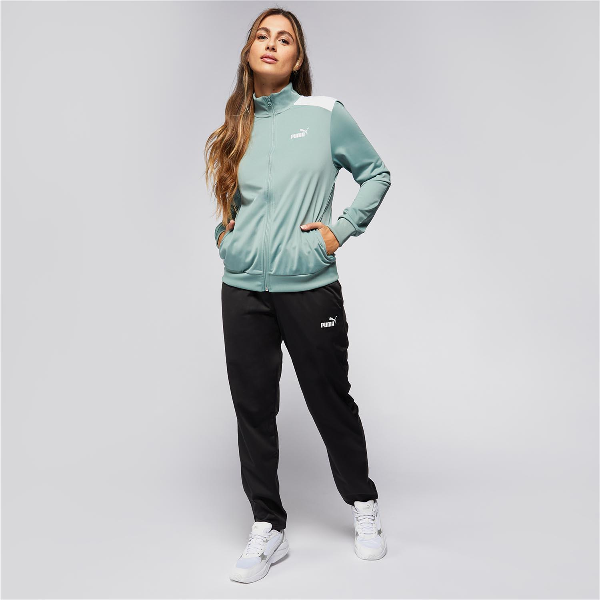
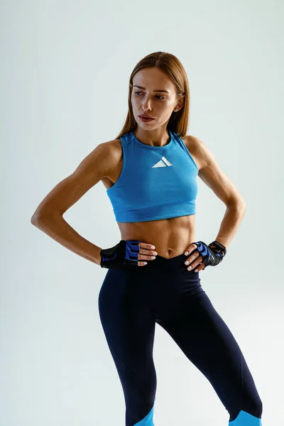

🏋️♀️ Estilo Fitness
En 2025 la ropa deportiva combina comodidad y diseño. Los tonos pastel, los tejidos transpirables y la tecnología de secado rápido marcan la pauta. La tendencia es ropa deportiva que puedas usar tanto en el gimnasio como en la calle.
 👟 Moda Athleisure
El estilo athleisure sigue creciendo: prendas deportivas que se combinan con accesorios casuales para un look versátil. Los conjuntos deportivos y las zapatillas de alto diseño son protagonistas.
🎥 Video Inspiración Deportiva
Mira este video con lo último en pasarelas de ropa deportiva 2025: